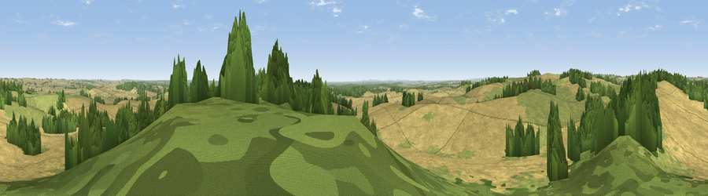

Viewpoint near Martin
#19899 in England · top 19% of its area beats it · near MartinWhere it is
The exact computed spot (SU 06075 17025). Click the marker for map links.
The view, rendered

A 360° render of this exact spot computed from the terrain model, tree cover and land cover — summer colours, afternoon light, calibrated against photographs of famous viewpoints. Real trees, hedges and buildings will differ in detail.
The panorama
Grey silhouette: terrain skyline in each direction (720 bearings, Earth curvature and refraction included). Dashed green: skyline with trees (+15 m) and buildings (+8 m) as obstacles. Blue strip: how far the ground is visible on each bearing.
Where the view opens
Wedge length = distance to the farthest visible ground on that bearing (vegetation-aware). Rings at 10, 25 and 50 km.
What fills the view
59% cropland · 23% grassland · 18% woodland
Angular shares of the visible panorama (visual magnitude), not map area. Landscape diversity 0.42 (0–1 Shannon).
Key numbers
More beautiful places nearby
The staircase of upgrades: each row has a higher view potential than everything closer. Driving times are estimates from straight-line distance, calibrated against real road routing — check an actual route before setting out.
| Place | Direction | Drive | Score |
|---|---|---|---|
| Viewpoint near Martin | W · 2 km | ~5 min | 64.6 |
| Viewpoint near Cranborne | W · 2 km | ~6 min | 65.0 |
| Trow Down | WNW · 10 km | ~19 min | 67.5 |
| Monk's Down | WNW · 13 km | ~24 min | 74.4 |
| Viewpoint near Berwick St John | WNW · 14 km | ~25 min | 78.2 |
| Viewpoint near Studland | S · 36 km | ~54 min | 80.9 |
| Viewpoint near Studland | S · 36 km | ~54 min | 82.2 |
| Ballard Down | S · 36 km | ~54 min | 83.2 |
50.95263, -1.91489 · source: screening · position refined by local search. Computed location — check access rights before visiting.